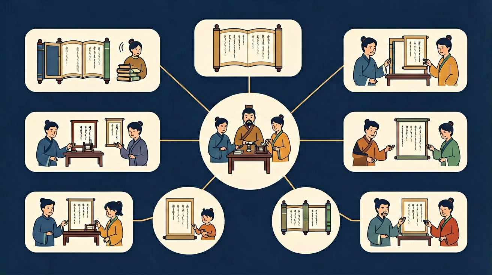

🤖 AI 多模态互动区
把你的问题告诉 AI，或上传图片让 AI 帮你分析
请输入几个汉字，AI将帮你判断其韵母是前鼻还是后鼻，并解释发音方法
点击复制此提示词 →
📎
点击或拖拽图片到这里

点击韵母，听听它的声音 👂
💡 前鼻韵母小秘密：
发音时，舌尖要顶住上牙龈 👅
像说 "n" 的感觉！
🎯 练习对比：点击听发音
练习前鼻韵母的小游戏
唱着学，记得快！
找一找故事里的前鼻韵母
📝 绕口令练习：
南边来了一只鹅，
北边来了一只鹅，
南北两只鹅，
打了个平手啊！
找一找：哪些字有前鼻韵母？
你已经学会了基本韵母 a、o、e、i、u、ü
加上鼻音 n 后，前鼻韵母 an、en、in、ün 的发音很难掌握，容易和后鼻韵母混淆
今天用「舌尖轻抵牙龈」的发音技巧来掌握前鼻韵母
测一测，帮助我们了解你的基础（不计入成绩）
题1：「山」的韵母是什么？
题2：前鼻韵母发音时，舌头位置在哪里？
💡 无论答对答错，继续学习都会有收获！
和前测对比，看看你进步了多少！
题1：「盆」和「棚」，哪个用前鼻韵母？
题2：以下哪组都是前鼻韵母？
💡 类比记忆：把今天的知识和你已经知道的事物联系起来，记得更牢！
❌ 常见错误
「山」的韵母写成 ang
✅ 正确做法
「山」的韵母是 an（shān），不是 ang
🩺 错因诊断：an 和 ang 的区别：发 an 时舌尖抵上齿龈，嘴巴较小；发 ang 时舌根抵软腭，嘴巴张大。试：发「安」（an）嘴巴小，发「昂」（ang）嘴巴大
把你的问题告诉 AI，或上传图片让 AI 帮你分析
点击或拖拽图片到这里
回忆：今天学了哪些关键词和规则？试着说出来。
用自己的话解释今天学的核心概念，不看书能说清楚吗？
用今天的知识解决一个实际问题，或写一个新例子。
把今天的知识与已有知识联系起来：有什么共同点？有什么区别？能不能自己创造一道新题？
先独立作答，再点选项查看对错与错因。
下列哪个字的拼音中包含前鼻韵母？
下列哪个前鼻韵母的发音时舌头要往前伸？
下列哪个字的拼音中不包含前鼻韵母？
“门”的拼音是____。
答案：mén
“门”的拼音是“mén”，其中的“en”是前鼻韵母。
“人”的拼音中，前鼻韵母是____。
答案：en
“人”的拼音是“rén”，其中的“en”是前鼻韵母。
下列哪个选项正确描述了前鼻韵母的特点？
通过观察和模仿，探索前鼻韵母的发音特点。
❓ 为什么“天”和“田”拼音结尾不一样？
❓ 前鼻音和后鼻音听起来有什么区别？
❓ 写“an”时鼻子要不要出气？
学完这一课，这些问题你都能自信地回答。
用镜子观察发an时舌尖顶住上齿龈
前鼻韵母是气流从鼻腔出来的尾音
对比an和ang，一个舌尖前伸一个舌根后缩
动画展示气流从鼻腔流出的路径
找名字里带前鼻音的同学
✅ 捏住鼻子发不准en音
💡 混淆前后鼻音发音位置
✅ 提醒检查最后字母是n不是ng
💡 受方言影响漏掉鼻音
口诀：舌尖抬起牙齿碰，鼻子出气an en in
类比：像感冒鼻塞时说话的感觉
And：学生已掌握单韵母a、o、e的发音
But：不清楚如何将鼻腔共鸣加入韵母发音
Therefore：本模块建立鼻音韵母基础概念
鼻音韵母是气流从鼻腔出来的发音，比如‘an’要先用舌尖抵住上齿龈发‘a’，然后快速打开鼻腔通道。就像说‘安全’的‘安’时，能感觉到鼻子微微震动。重点注意：发‘an’时口型先张大到能放进2根手指（约3厘米），再转为鼻腔共鸣。
🌍 找找教室里的鼻音韵母：黑板报上的‘春’（chun）、同学名字‘敏’（min）、课本里的‘文’（wen），发音时都要用鼻子帮忙！
下面哪个字的韵母需要鼻腔震动？
And：学生能区分普通韵母和鼻音韵母
But：前鼻音‘an/en/in’容易混淆
Therefore：本模块专攻前鼻音发音定位
前鼻音特点是舌尖要顶住上牙床！发‘in’时像微笑露8颗牙（约1厘米缝隙），舌尖像小钉子钉在上牙背面。例如‘金’字：先摆好‘i’的口型，然后舌尖上顶发‘n’。注意‘an’和‘en’区别：发‘an’嘴巴张大约60度，‘en’嘴巴只张30度。
🌍 游戏时间：对着小镜子练习‘森林’（sen lin），观察发‘en’时下巴下降1厘米，发‘in’时嘴角往两边拉！
发‘in’时哪个动作最关键？
And：学生能单独发准前鼻音
But：在词语中容易丢失鼻音特征
Therefore：本模块训练鼻音韵母的连贯发音
连续发音时鼻音容易‘逃跑’！秘诀是：说词语时把鼻音延长半拍。比如‘新年’要读成‘xīn——nián’，感受鼻子震动2秒。特别注意三拼音节如‘bian’，中间的‘i’要快速滑到鼻音‘an’，像坐滑梯从‘b-i’滑到‘-an’。
🌍 挑战绕口令：‘盆碰瓶，瓶碰盆’连续说3遍，要求每个‘pen’‘ping’的鼻音都清晰可闻！
读‘电灯’时哪个字要延长鼻音？